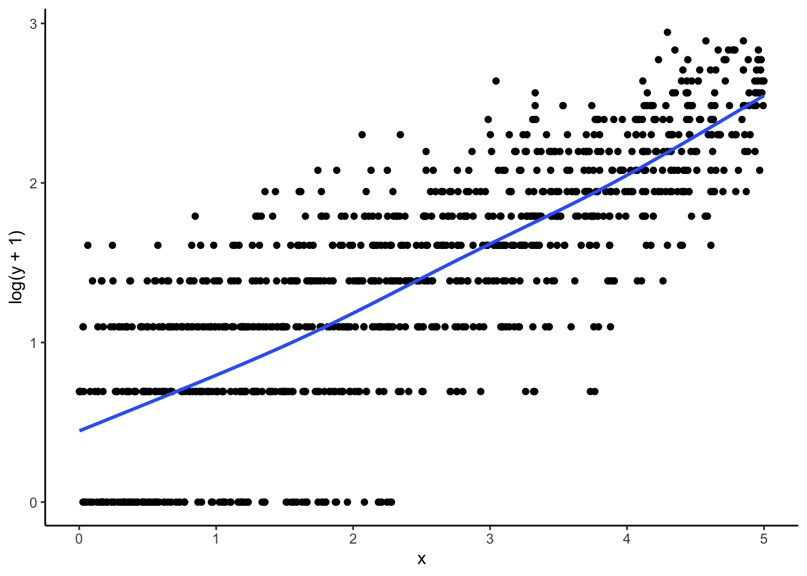

library(tidyverse)
library(sjPlot)
library(ggeffects)
theme_set(theme_classic())
rm(list = ls())
dat <- tibble(
x = runif(1000, 0, 5),
y = rpois(1000, exp(0.5*x))
)27 GLMs vs. Transformations
Those of you coming from S40 and S52 may recall that when we have non-linear relationships between X and Y, we can apply a transformation, such as taking the log, to linearize the relationship. In the words of Jimmy Kim, “with transformations, we use the machinery of linear regression to model non-linear relationships.” If that’s the case, then what is Poisson regression about, which deals with log counts? This is a topic that confused me for many years so hopefully I can clear it up here.
27.1 Making and Graphing the Data
Let’s start by making some fake data. Here’s the data-generating function, which has the relationship that a 1-unit increase in x will increase the expected count by \(e^.5 = 1.65\).
\[ y = Poisson(e^{0.5x}) \]
In the graph, we can see that the relationship between x and y is clearly non linear!
ggplot(dat, aes(x = x, y = y)) +
geom_point() +
geom_smooth(se = FALSE)
Let’s plot log_y + 1 on x. Amazing! The relationship is basically linear, which suggests that a 1-unit increase in x has some multiplicative effect on y.
ggplot(dat, aes(x = x, y = log(y + 1))) +
geom_point() +
geom_smooth(se = FALSE)
27.2 Fitting the Regression Models
Let’s use both OLS and Poisson regression to fit the data. We see a few things:
- The Poisson model fits drastically better, both in terms of \(R^2\) and that the coefficients are close to the data-generating values
- The transformed OLS model understates the slope
- Both models have (seemingly) similar interpretations: a 1-unit increase in
xcauses an \(e^\beta\) increase iny. How is this possible?
So what’s going on?
The answer is that there is a very subtle difference between a transformed OLS regression and a Poisson regression. In transformed OLS, we are modeling the mean of the log of Y, or \(E(ln(y|x))\). In Poisson, we’re modeling the log of the mean of Y, or \(ln(E(y|x))\). These are not equivalent! In essence, Poisson regression is a model for the arithmetic mean, whereas OLS is a model for the geometric mean. This means that when we exponentiate the Poisson model, we can get predicted counts, but this is not true of the OLS model.
m1 <- lm(log(y + 1) ~ x, dat)
m2 <- glm(y ~ x, dat, family = poisson)
tab_model(m1, m2,
p.style = "stars",
show.ci = FALSE,
show.se = TRUE,
digits = 3,
transform = NULL,
dv.labels = c("Log(Y+1)", "Poisson"))| Log(Y+1) | Poisson | |||
| Predictors | Estimates | std. Error | Log-Mean | std. Error |
| (Intercept) | 0.375 *** | 0.029 | -0.074 | 0.045 |
| x | 0.420 *** | 0.010 | 0.516 *** | 0.012 |
| Observations | 1000 | 1000 | ||
| R2 / R2 adjusted | 0.631 / 0.631 | 0.906 | ||
| * p<0.05 ** p<0.01 *** p<0.001 | ||||
27.3 More Intuition: An Example with Means
Let’s create a super simple data set, s.
s <- c(1, 10, 100)It’s clearly skewed. But I can still take the mean. I could take the arithmetic mean, or the geometric mean. These are clearly different quantities.
mean(s) # arithmetic[1] 37exp(mean(log((s)))) # geometric[1] 10The idea of Poisson is to take the log of the mean and fit a linear model for that:
log_mean <- log(mean(s))
log_mean[1] 3.610918The idea of transformed OLS is to take the mean of the log and fit a linear model for that:
mean_log <- mean(log(s))
mean_log[1] 2.302585When I exponentiate the log of the mean, I get back the original arithmetic mean. This is what Poisson is doing:
exp(log_mean)[1] 37When I exponentiate the mean of the log, I get back the original geometric mean. This is what transformed OLS is doing:
exp(mean_log)[1] 1027.4 Further Reading
https://www.theanalysisfactor.com/the-difference-between-link-functions-and-data-transformations/